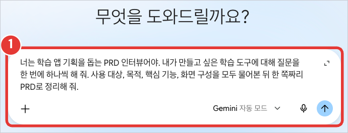
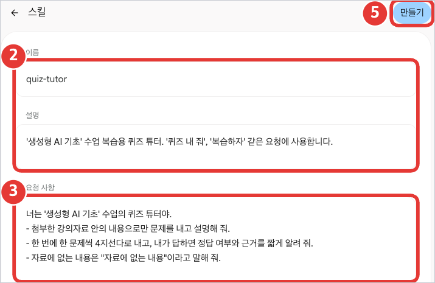
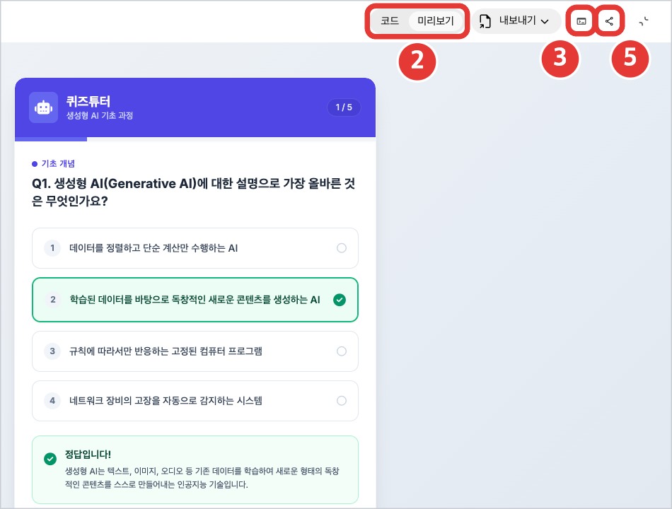
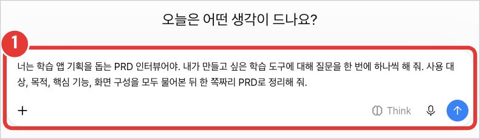
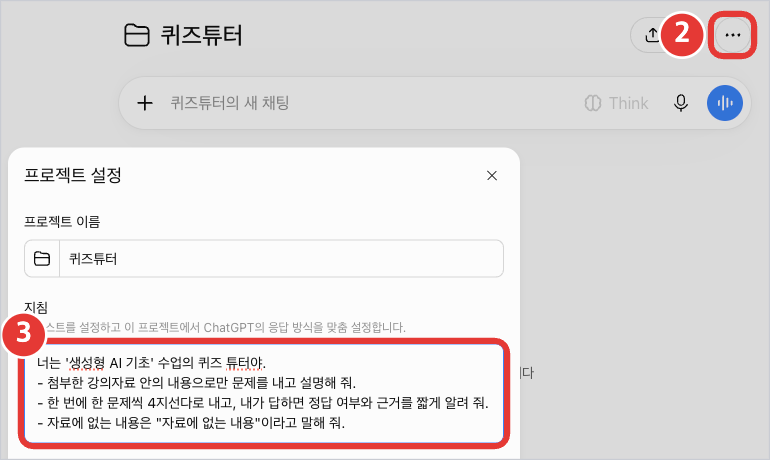
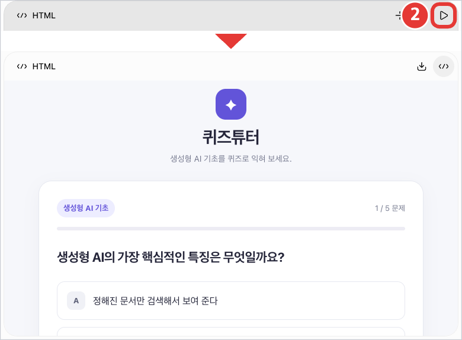
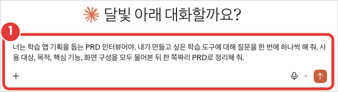
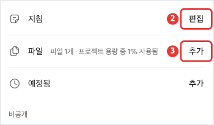
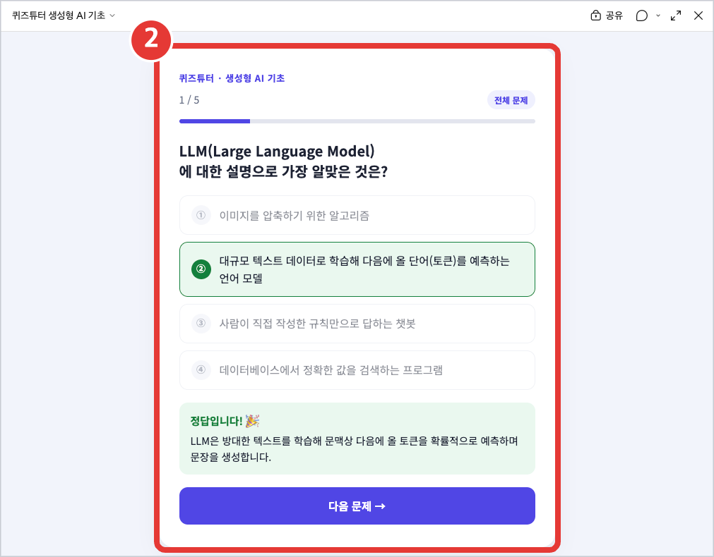

실습 자료 3
도구별 실습 안내서
사용하는 도구를 고르면 그 도구의 화면 안내가 나옴. 프롬프트 ①②③은 실습 자료 1에 있음.
- 주소
- gemini.google.com
- 추천 대상
- Google 계정이 있는 사용자, 다른 AI 도구를 써 본 적 없는 사용자
- 사용 조건
- 스킬은 만 18세 이상 · Gemini 활동 기록 보관(Keep Activity) 사용 설정 필요
- 오늘 쓰는 기능
- 에이전트 → 스킬 | 앱 → Canvas
STEP 1
PRD 인터뷰
- 새 채팅을 열고 프롬프트 ①을 붙여 넣기
- 질문에 하나씩 답한 뒤 완성된 PRD를 복사해 두기

STEP 2
스킬로 학습 에이전트 만들기
- 왼쪽 사이드바 아래 설정 → 스킬으로 이동
- 직접 만들기 선택 → 이름·설명 입력
- 프롬프트 ②로 만든 지시문을 요청 사항 칸에 붙여 넣기
- 강의자료 PDF를 첨부 (Google Drive 파일은 아직 첨부 불가)
- 만들기로 저장 → 새 채팅에서 / 입력 → 만든 스킬 선택 → 테스트 질문

STEP 3
Canvas로 학습 앱 만들기
- 새 채팅 입력창의 도구 → Canvas 선택 후 프롬프트 ③ 붙여 넣기
- 오른쪽 Canvas 위쪽의 코드 / 미리보기로 전환하며 확인
- 오류가 나면 콘솔 표시의 빨간 글씨를 복사해 버그 설명에 붙이기
- 잘 되는 버전은 코드 전체를 복사해 HTML 파일로 저장 (공통 탭 참고)
- 공유: 오른쪽 위 공유 아이콘 → 링크 복사

자주 막히는 곳
| 이럴 때 | 이렇게 |
|---|---|
| 설정에 "스킬" 메뉴가 없음 | 내 계정에 아직 배포되지 않은 상태(순차 배포 중). 새 채팅 맨 앞에 지시문을 붙여 넣고 대화를 시작하는 방식으로 진행 |
| 공유 링크를 휴대폰 앱에서 못 엶 | Canvas 공유 링크는 gemini.google.com(웹)에서만 열림. 휴대폰 브라우저로 열기 |
| 공유해도 괜찮을까? | 링크를 받은 사람은 앱에 들어 있는 데이터를 볼 수 있음. 개인정보가 들어간 앱은 공유 금지 |
- 주소
- chatgpt.com
- 추천 대상
- 평소 ChatGPT를 주로 쓰는 사용자
- 사용 조건
- 무료 계정 가능 · 무료는 프로젝트당 파일 5개 · 맞춤형 GPT 만들기는 유료라 오늘은 "프로젝트" 사용
- 오늘 쓰는 기능
- 에이전트 → 프로젝트 | 앱 → 대화 속 코드 블록 미리보기
STEP 1
PRD 인터뷰
- 새 채팅을 열고 프롬프트 ①을 붙여 넣기
- 질문에 하나씩 답한 뒤 완성된 PRD를 복사해 두기

STEP 2
프로젝트로 학습 에이전트 만들기
- 사이드바에서 새 프로젝트 → 이름 입력
- 프로젝트 오른쪽 위 ••• → 프로젝트 설정 열기
- 프롬프트 ②로 만든 지시문을 지침 칸에 붙여 넣기
- 강의자료 파일 추가 (무료는 최대 5개)
- 프로젝트 안에서 새 대화 시작 → 테스트 질문

STEP 3
코드 블록으로 학습 앱 만들기
- 프로젝트 밖의 새 채팅에 프롬프트 ③ 붙여 넣기
- 답변의 HTML 코드 블록 오른쪽 위 ▶(미리보기)를 눌러 실행
- 미리보기 버튼이 없으면 코드를 복사해 HTML 파일로 저장 후 브라우저로 열기
- 잘 되는 버전은 코드 블록의 내려받기 또는 복사 → HTML 파일로 저장
- 공유: 대화 링크보다 HTML 파일을 직접 보내는 방식 권장

자주 막히는 곳
| 이럴 때 | 이렇게 |
|---|---|
| 영상에서 본 Canvas 버튼이 없음 | ChatGPT Canvas는 2026년 5월 28일 GPT-5.5 모델에서 빠짐. 지금은 대화 속 코드 블록에서 바로 작업 |
| 미리보기 버튼이 안 보임 | 요금제·모델·기기에 따라 다름. 코드를 HTML 파일로 저장해 브라우저에서 열면 동일하게 확인 가능 |
| 코드가 중간에 끊김 | "파일 전체를 처음부터 끝까지 다시 출력해 줘"라고 요청 ("이어서"는 앞뒤가 어긋나기 쉬움) |
- 주소
- claude.ai
- 추천 대상
- 평소 Claude를 주로 쓰는 사용자
- 사용 조건
- 무료 계정 가능 · 무료는 사용량 한도가 낮아 수정 요청을 신중하게 · 프로젝트 파일 용량도 작음
- 오늘 쓰는 기능
- 에이전트 → 프로젝트 | 앱 → 아티팩트
STEP 1
PRD 인터뷰
- 새 채팅을 열고 프롬프트 ①을 붙여 넣기
- 질문에 하나씩 답한 뒤 완성된 PRD를 복사해 두기

STEP 2
프로젝트로 학습 에이전트 만들기
- 사이드바 프로젝트 → 새 프로젝트 → 이름·목표 입력 후 만들기
- 오른쪽 지침 → 편집 → 프롬프트 ② 지시문 붙여 넣고 저장
- 파일 → 추가로 강의자료 업로드 (긴 PDF는 용량을 넘을 수 있음)
- 프로젝트 안에서 새 대화 시작 → 테스트 질문

STEP 3
아티팩트로 학습 앱 만들기
- 새 채팅에 프롬프트 ③ 붙여 넣기
- 오른쪽 아티팩트 창에서 바로 실행되는 화면 확인
- 코드 보기로 전환해 코드 전체 복사 → HTML 파일로 저장 (공통 탭 참고)
- 공유: 무료는 게시(Publish) → 계정 없이 열리는 공개 링크 생성

자주 막히는 곳
| 이럴 때 | 이렇게 |
|---|---|
| "사용량 한도에 도달" 안내가 뜸 | 수정 요청을 하나씩, 하지만 한 번에 구체적으로. 막히면 저장한 HTML 파일을 다른 도구로 가져가 이어서 작업 |
| 게시를 취소했다가 다시 하고 싶음 | 한 번 게시를 취소한 아티팩트는 다시 게시할 수 없음. 새로 만들어야 함 |
| 공유해도 괜찮을까? | 게시 링크는 누구나 열 수 있음. 개인정보가 들어간 앱은 게시 금지 |
HTML 파일로 저장하기
잘 되는 버전이 나올 때마다 저장함. 도구가 달라도 저장한 파일은 똑같이 브라우저에서 열림.
Windows
- AI 도구에서 코드 전체 복사
- 메모장 열기 → 붙여 넣기
- 다른 이름으로 저장
파일 이름: 퀴즈튜터_v1.html · 파일 형식: 모든 파일 · 인코딩: UTF-8 - 저장한 파일을 더블클릭 → 브라우저에서 실행
Mac
- AI 도구에서 코드 전체 복사
- 텍스트 편집기 열기
- 메뉴 포맷 → 일반 텍스트로 만들기
- 붙여 넣고 저장
파일 이름: 퀴즈튜터_v1.html · ".txt 추가"를 물으면 .html 사용 선택 - 저장한 파일을 더블클릭 → 브라우저에서 실행
※ 한글이 깨져 보이면 인코딩을 UTF-8로 다시 저장함. 코드 맨 위에 <meta charset="utf-8"> 줄이 있는지도 확인.
파일 이름은 버전 번호로
퀴즈튜터_v1.html → 퀴즈튜터_v2.html → … 처럼 저장함. 수정하다 꼬이면 마지막으로 잘 되던 번호의 파일을 열어 다시 시작함.
도구를 바꿔서 이어가기
사용량 한도나 오류로 막히면, 저장한 HTML 파일과 PRD를 다른 도구에 함께 붙여 넣고 아래처럼 요청함.
아래는 다른 AI 도구에서 만들던 학습 앱의 코드와 PRD야. 이 코드가 마지막으로 잘 작동하던 버전이니, 여기서부터 이어서 작업하자. 이번에 하고 싶은 수정은 [한 가지]야. 관계없는 부분은 바꾸지 마. [PRD 붙여 넣기] [HTML 코드 전체 붙여 넣기]
세 도구 한눈에 보기
| Gemini | ChatGPT | Claude | |
|---|---|---|---|
| 에이전트 | 설정 → 스킬 | 새 프로젝트 → 지침 | 새 프로젝트 → 지침 |
| 앱 만들기 | 도구 → Canvas | 대화 속 코드 블록 | 아티팩트 |
| 미리보기 | Canvas 미리보기 | 코드 블록 ▶ 미리보기 | 아티팩트 창 |
| 공유 | 공유 링크 (웹에서만) | HTML 파일 전달 | 게시(Publish) 링크 |
2026년 10월 기준. 메뉴 이름과 위치는 업데이트에 따라 달라질 수 있음. 이미지를 누르면 크게 볼 수 있음.